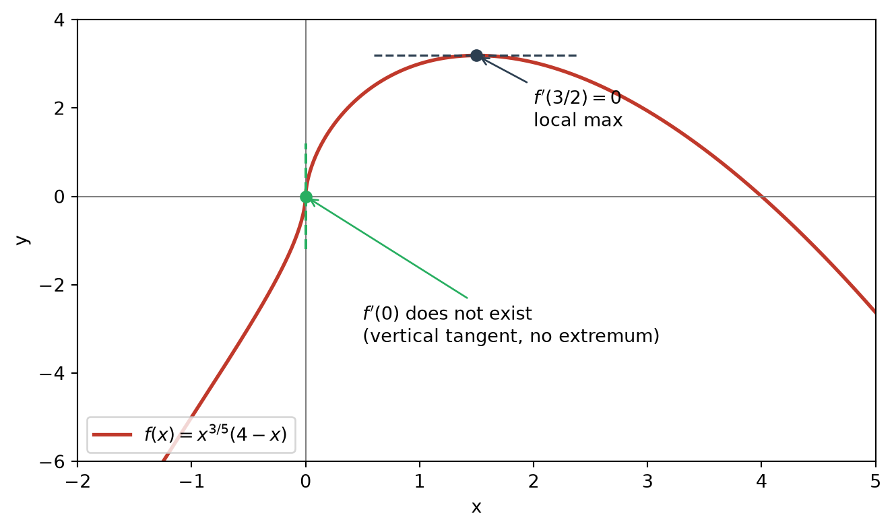
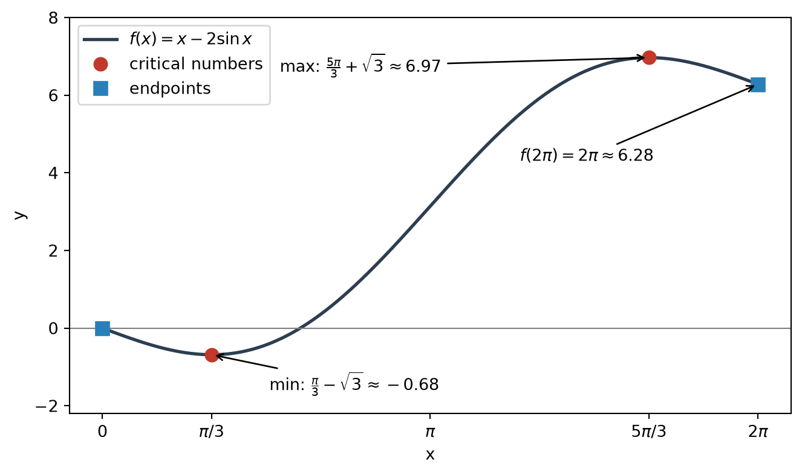

flowchart LR
A["EVT<br/>max and min exist"] --> C["Absolute max at c"]
C --> D{"Where is c?"}
D -->|"endpoint"| E["c = a or c = b"]
D -->|"interior"| F["absolute max is also<br/>a local max"]
F --> G["c is a<br/>critical number"]
E --> H["Candidate set:<br/>critical numbers ∪ endpoints"]
G --> H
H --> I["Evaluate f and compare"]
Applications of Differentiation: Critical Numbers and the Closed Interval Method
Name the candidates, guarantee the winner exists, then just compare
Finding the absolute maximum and minimum of a continuous function on a closed interval reduces to a finite comparison. Two facts make this possible. The Extreme Value Theorem guarantees that the extreme values exist. Fermat’s Theorem, restated in terms of critical numbers, guarantees that an interior extreme value can only occur at a critical number. The true maximum is therefore always among a short list of candidates (critical numbers and endpoints), and evaluating \(f\) at each candidate settles the question. You never need to classify a candidate as a local maximum, a local minimum, or neither.
1 Critical Numbers
1.1 Definition
NoteCritical number
A critical number of \(f\) is a number \(c\) in the domain of \(f\) such that either \[ f'(c) = 0 \qquad\text{or}\qquad f'(c)\ \text{does not exist}. \]
This definition gives a name to the conclusion of Fermat’s Theorem: the interior points where an extreme value could occur.
1.2 Why “in the domain” matters
The domain condition is not decoration. For \(f(x) = 1/x\), the derivative \(f'(x) = -1/x^2\) fails to exist at \(x=0\), but \(0\) is not a critical number because \(f(0)\) is undefined. A point where the function has no value cannot carry an extreme value, so it is not a candidate.
1.3 Finding critical numbers: write \(f'\) as a single fraction
Consider \[ f(x) = x^{3/5}(4-x) = 4x^{3/5} - x^{8/5}. \] Differentiating and combining over a common denominator gives \[ f'(x) = \frac{12}{5}x^{-2/5} - \frac{8}{5}x^{3/5} = \frac{12 - 8x}{5x^{2/5}}. \]
Writing \(f'\) as one fraction is worth the effort because it separates the two kinds of critical numbers structurally.
| Source | Condition | Critical number | Geometry |
|---|---|---|---|
| Numerator \(=0\) | \(12 - 8x = 0\) | \(x = \tfrac32\) | Horizontal tangent |
| Denominator \(=0\) | \(5x^{2/5} = 0\), and \(f(0)=0\) is defined | \(x = 0\) | Vertical tangent |
1.4 A critical number is a candidate, not a verdict
The two critical numbers above behave differently.
- \(x = \tfrac32\): \(f'\) changes sign from \(+\) to \(-\) (the numerator \(12-8x\) changes sign, the denominator stays positive). So \(f\) has a local maximum there, with \(f(\tfrac32) = (\tfrac32)^{3/5}\cdot\tfrac52 \approx 3.19\).
- \(x = 0\): Near \(0\), \(f(x) \approx 4x^{3/5}\), and \(x^{3/5}\) has the same sign as \(x\). So \(f\) goes from negative to positive through \(0\), and \(0\) is not a local extremum. This is the same situation as \(y = x^3\) at the origin. The only difference is that the curve crosses a vertical tangent instead of a horizontal one. Note also that the denominator \(5x^{2/5}\) is positive on both sides of \(0\), so \(f'\) does not change sign there.

2 Fermat’s Theorem in the Language of Critical Numbers
ImportantRestated Fermat’s Theorem
If \(f\) has a local maximum or local minimum at \(c\), then \(c\) is a critical number of \(f\).
This follows by splitting into two cases.
- If \(f'(c)\) exists, the original Fermat’s Theorem gives \(f'(c)=0\), so \(c\) is critical.
- If \(f'(c)\) does not exist, \(c\) is critical by definition.
The restatement absorbs the hypothesis “if \(f'(c)\) exists” into the definition of a critical number. Corners such as \(y=|x|\) at \(0\) are now covered automatically.
The converse is still false: a critical number need not be an extremum. Both \(y=x^3\) at \(0\) (horizontal tangent) and \(f(x)=x^{3/5}(4-x)\) at \(0\) (vertical tangent) are counterexamples.
| Statement | True? | Counterexample |
|---|---|---|
| local extremum at \(c\) \(\Rightarrow\) \(c\) critical | Yes | — |
| \(c\) critical \(\Rightarrow\) local extremum at \(c\) | No | \(x^3\) at \(0\); \(x^{3/5}(4-x)\) at \(0\) |
| local extremum at \(c\) \(\Rightarrow\) \(f'(c)=0\) | No | \(\lvert x\rvert\) at \(0\) |
3 The Closed Interval Method
3.1 The procedure
NoteClosed Interval Method
To find the absolute maximum and minimum values of a continuous function \(f\) on a closed interval \([a,b]\):
- Find the values of \(f\) at the critical numbers of \(f\) in the open interval \((a,b)\).
- Find the values \(f(a)\) and \(f(b)\) at the endpoints.
- The largest value from Steps 1 and 2 is the absolute maximum; the smallest is the absolute minimum.
3.2 Why it always works
The method is a chain of guarantees.
- Existence (EVT). Since \(f\) is continuous on the closed interval \([a,b]\), there is a point \(c\) where \(f\) attains its absolute maximum.
- Location. The point \(c\) is either an endpoint or an interior point.
- Interior means local. If \(c\) is interior, some open interval around \(c\) lies inside \([a,b]\). Since \(f(c)\) beats every value on \([a,b]\), it beats every value on that open interval, so \(f(c)\) is also a local maximum.
- Local means critical. By the restated Fermat’s Theorem, \(c\) is a critical number.
- Conclusion. The true maximum lies in the candidate set \(\{\text{critical numbers in } (a,b)\} \cup \{a, b\}\). Comparing the values of \(f\) on this set must find it.
The same argument applies to the minimum.
3.3 Practical remarks
- No classification needed. Candidates that are not extrema (like \(0\) for \(x^{3/5}(4-x)\)) do no harm. They simply lose the comparison.
- Step 1 uses the open interval. Endpoints are handled separately in Step 2, because Fermat’s Theorem says nothing about them. At an endpoint you can only move in one direction, so \(f'\) need not vanish there. For example, \(f(x)=x\) on \([0,1]\) has its maximum at \(x=1\), where \(f'(1)=1\).
- The hypotheses are load-bearing. If \(f\) is discontinuous or the interval is not closed, Step 1 of the justification (existence) fails, and the comparison may return a number that is not attained or miss that the function is unbounded.
4 Worked Example: \(f(x) = x - 2\sin x\) on \([0, 2\pi]\)
Critical numbers. \[ f'(x) = 1 - 2\cos x = 0 \iff \cos x = \tfrac12 \iff x = \tfrac{\pi}{3},\ \tfrac{5\pi}{3}. \] Since \(f'\) exists everywhere, there are no other critical numbers.
Evaluate every candidate.
| \(x\) | Type | \(f(x)\) | Approx. |
|---|---|---|---|
| \(0\) | Endpoint | \(0\) | \(0\) |
| \(\pi/3\) | Critical | \(\dfrac{\pi}{3} - \sqrt3\) | \(-0.684\) |
| \(5\pi/3\) | Critical | \(\dfrac{5\pi}{3} + \sqrt3\) | \(6.968\) |
| \(2\pi\) | Endpoint | \(2\pi\) | \(6.283\) |
Conclusion. \[ \max_{[0,2\pi]} f = \frac{5\pi}{3} + \sqrt3 \ \text{ at } x = \frac{5\pi}{3}, \qquad \min_{[0,2\pi]} f = \frac{\pi}{3} - \sqrt3 \ \text{ at } x = \frac{\pi}{3}. \]
A graph alone gives estimates (maximum about \(6.97\) near \(x\approx5.2\), minimum about \(-0.68\) near \(x\approx1.0\)). Calculus gives the exact values.
The endpoint value \(f(2\pi)\approx6.28\) comes close to the maximum but loses. This is a reminder that endpoints are genuine competitors: with a slightly different function or interval, an endpoint could win.

5 Summary
| Result | Role |
|---|---|
| Extreme Value Theorem | Guarantees that the absolute max and min exist |
| Fermat’s Theorem (restated) | Interior extrema occur only at critical numbers |
| Closed Interval Method | Compares candidates (critical numbers and endpoints) to find the actual values |
6 Common Pitfalls
- Forgetting the endpoints. Fermat’s Theorem never rules them out, so they must always be evaluated.
- Forgetting points where \(f'\) does not exist. Solving only \(f'(x)=0\) misses corners and vertical tangents. Writing \(f'\) as a single fraction exposes them as zeros of the denominator.
- Counting points outside the domain. A zero of the denominator of \(f'\) is a critical number only if \(f\) itself is defined there.
- Reading a critical number as an extremum. A critical number is only a candidate. In the Closed Interval Method this does not matter, but in local analysis it does.
- Applying the method without its hypotheses. On an open interval or for a discontinuous function, the extreme values may not exist, and comparing candidates proves nothing.